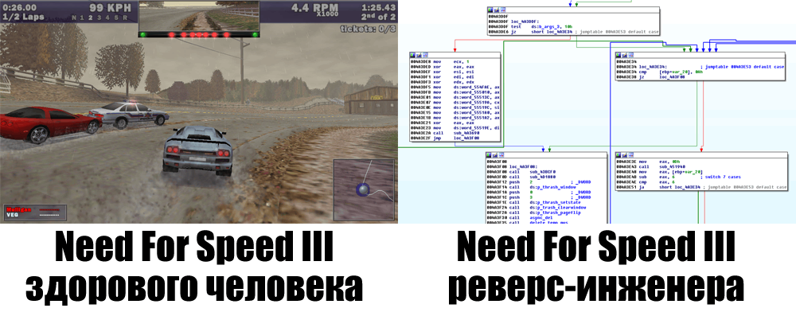
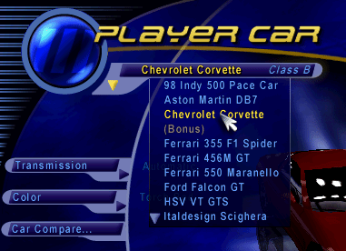
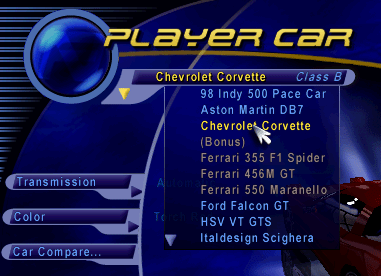
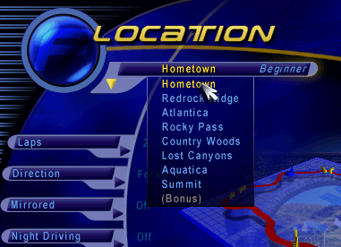
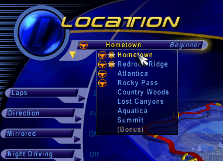
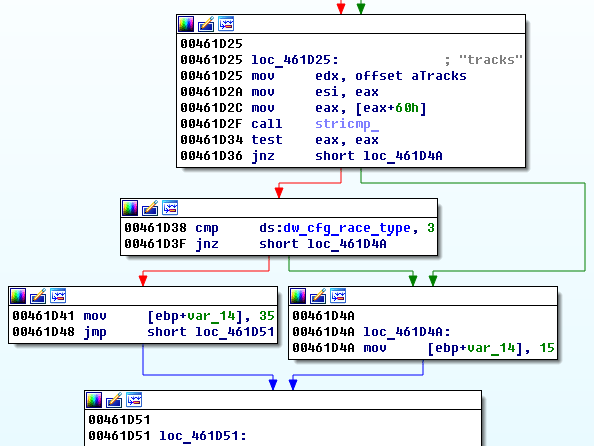
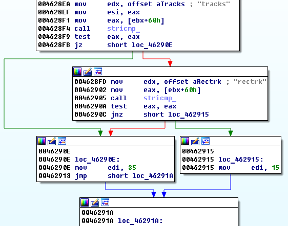
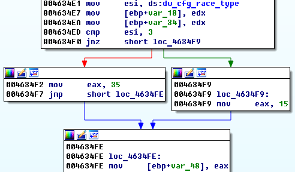
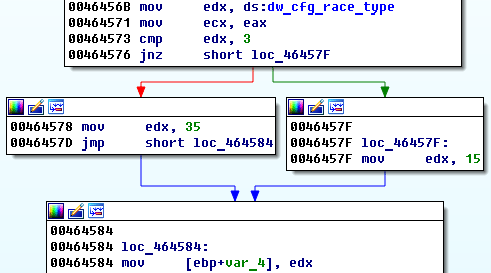
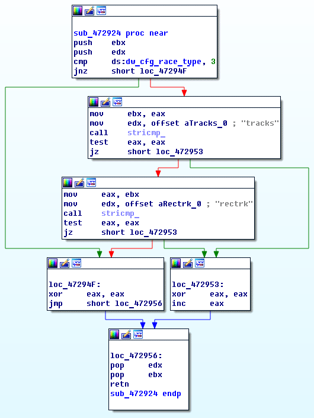

..., даже если проект не планируется развивать и вы не собираетесь делиться исходными кодами, потому что через 20 лет какой-нибудь маньяк будет изучать и дорабатывать машинный код вашего продукта, и он может захотеть вас найти.  Вообще я достаточно редко играю в компьютерные игры. Бывало, не играл по несколько лет подряд. Но иногда во мне просыпается маленький реверс-инженер, который мотивирует меня забраться в машинный код какой-нибудь любимой игрушки из прошлого. В последний год я занимался доработкой Need For Speed III: Hot Pursuit (1998 года). Это моя любимая игра в жанре, но теперь я, к своему сожалению, знаю о том, насколько отвратительно она написана. Большое количество маленьких багов в самых неожиданных местах — прямое следствие низкого качества кода.
Насколько всё плохо?
В исполняемом файле огромное количество кода, который остался в наследство от предыдущих частей игры и не используется, то есть устаревший код не удалялся разработчиками, причём мне встречались случаи, когда какой-то устаревший код вызывался, но результаты его работы игнорировались, потому что обновлённому коду они уже были не нужны. В игре всюду используются статичные массивы фиксированного размера, во многих случаях отсутствуют проверки выхода за пределы массива, что приводит к падениям, когда какого-то зарезервированного объёма памяти не хватает. В игре используется большое количество грязных хаков. Например, функция гонки по отражённому варианту трассы реализована не отражением модели трассы при её загрузке, а переворотом каждого кадра при рендеринге, с инверсией кнопок «лево» и «право» и ряда аналогичных подмен там, где разработчики не забыли добавить соответствующий код. Из-за этого надписи на машинах (например, копов) отражены, а во время гонок копы путают «право» и «лево» при переговорах по рации. Есть и ошибки, явно связанные с использованием магических чисел в коде вместо именованных констант, когда значение константы в процессе разработки было изменено, но остался код, который использует старое значение и работает неправильно. Но один случай оказался забавным настолько, что мне захотелось поделиться им в рамках небольшой заметки.
Сколько ошибок может быть в 4 вариантах одного и того же кода?
В игре присутствовал один незначительный баг, связанный с отступами в выпадающих меню. Например, если был выбран режим «Hot Pursuit», левый отступ всех верхних выпадающих списков значительно увеличивался без явной на то необходимости.   Я предположил, что это связано с ошибкой в коде, который добавляет пространство для вывода иконок прохождения в выпадающем списке трасс, которые как раз и должны отображаться только в режиме «Hot Pursuit».   Обычные выпадающие списки тоже имели проблемы с отступами в зависимости от режима, но не в такой явной форме. Поскольку я как раз копался рядом с соответствующим кодом, решил заодно исправить и это странное поведение. Тут стоит отметить, что в коде игры не встречаются следы вещей вроде наследования, так что скорее всего она писалась на чистом C. В игре реализован код, который читает списки элементов меню и их свойства из внешних текстовых файлов, но разработчики часто ленились добавлять поддержку какого-то нового свойства, и писали дополнительный код, опираясь просто на имя элемента. Например, код вывода выпадающих списков сам проверяет название текущего элемента и какие-то другие переменные, и в зависимости от этого может применять какую-то дополнительную логику. Так оказалось и здесь. Поскольку в меню используется два разных типа выпадающих списков (обычный и верхний), весь код работы с ними был целиком продублирован дважды. Помимо этого оказалось, что левый отступ выбирается разными фрагментами кода при вычислении левой и правой границы выпадающего списка. Итого — по идее у нас должно быть 4 копии одного и того же кода. Как бы не так! Вариант 1 (при вычислении отступа левой границы обычной выпадашки):  На C это выглядело примерно так:
dw_padding = (stricmp(str_element_name, "tracks") == 0 && dw_cfg_race_type == 3) ? 35 : 15;
Вариант 2 (при вычислении отступа правой границы обычной выпадашки):  На C это выглядело примерно так:
dw_padding = (stricmp(str_element_name, "tracks") == 0 || stricmp(str_element_name, "rectrk") == 0) ? 35 : 15;
Варианты 3 и 4 (при вычислении отступа левой и правой границ выпадашки под заголовком):   На C это выглядело примерно так:
dw_padding = (dw_cfg_race_type == 3) ? 35 : 15;
Все варианты вместе (для наглядности):
dw_padding = (stricmp(str_element_name, "tracks") == 0 && dw_cfg_race_type == 3) ? 35 : 15;
dw_padding = (stricmp(str_element_name, "tracks") == 0 || stricmp(str_element_name, "rectrk") == 0) ? 35 : 15;
dw_padding = (dw_cfg_race_type == 3) ? 35 : 15;
Какой же вариант правильный? Ответ: ни один! Только если мы объединим все проверки вместе, мы можем получить единственно верный вариант кода, и выглядел бы он примерно так:
dw_padding = (dw_cfg_race_type == 3 && (stricmp(str_element_name, "tracks") == 0 || stricmp(str_element_name, "rectrk") == 0)) ? 35 : 15;
Итого у нас 4 варианта одного и того же кода, при этом в разных вариантах допущено 3 разные ошибки! Просто уникальный случай и отличная демонстрация того, почему копипаста — это плохая идея.
Как это было исправлено?
О том, как вносятся изменения в машинный код, я писал ранее. Для исправления проблемы я написал одну функцию:  Все приведённые выше фрагменты кода были заменены на вызов этой функции. Теперь отступы в списках выбираются правильно :) И это лишь одно из более чем 200 изменений, которые были сделаны в патче. Описанное изменение на самом деле одно из самых маленьких, но зато сама ошибка, на мой взгляд, была интересной (как демонстрация вреда от соответствующего антипаттерна).
Выводы?
А теперь подумайте. Если здесь нашёлся самозванец, который взялся исправлять без спроса чужие баги в программе без исходных кодов, может найтись и тот, кто в итоге будет настолько зол, что у него появится желание отыскать разработчика или его родственников. А оно вам надо? Пишите качественный код :)